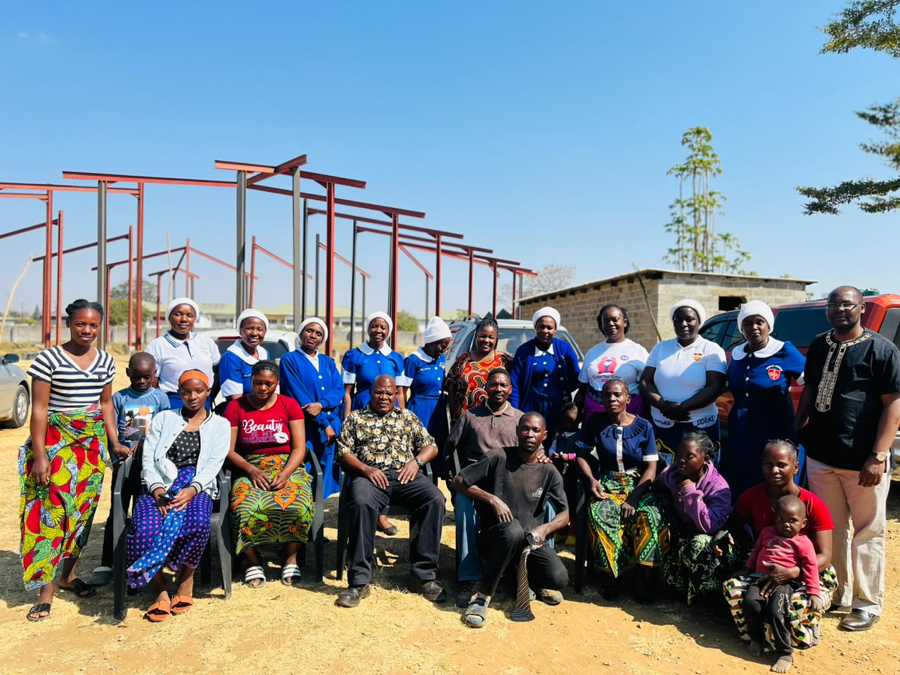
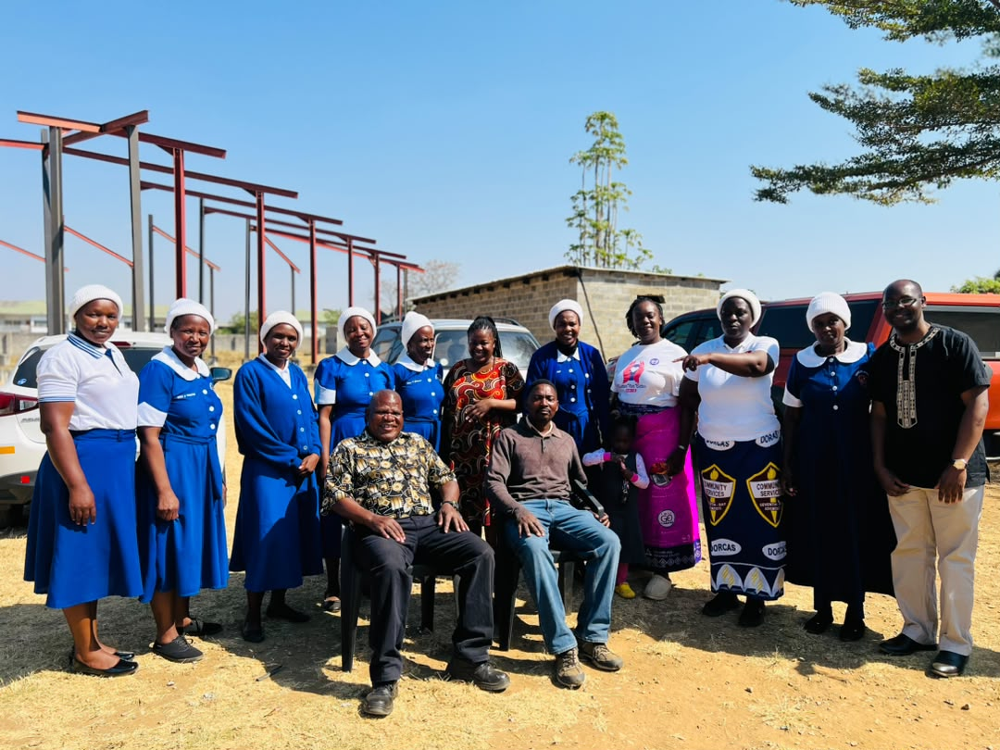
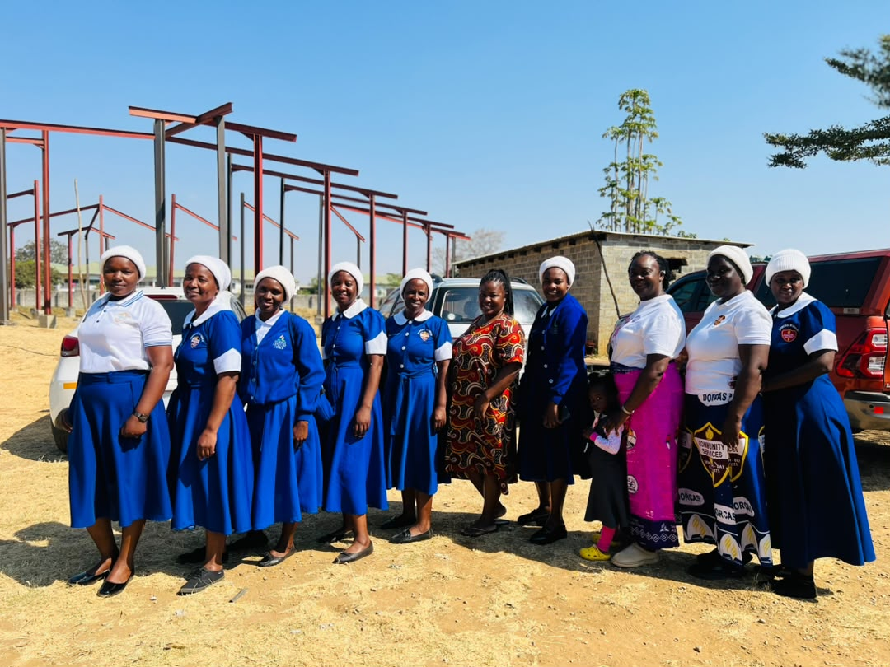
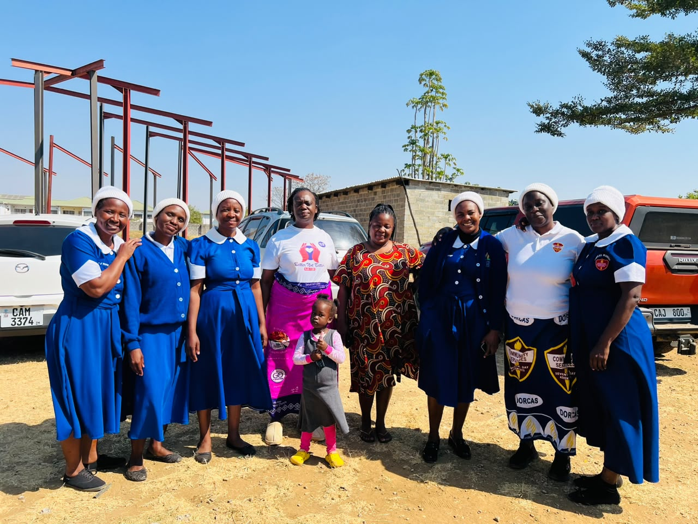
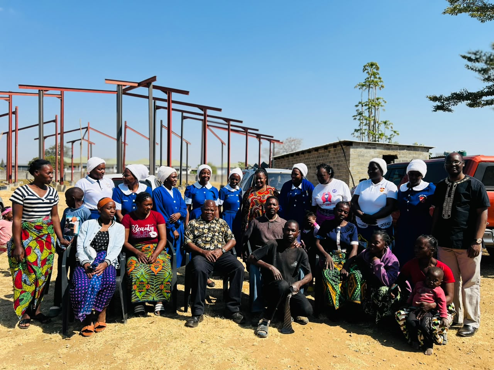
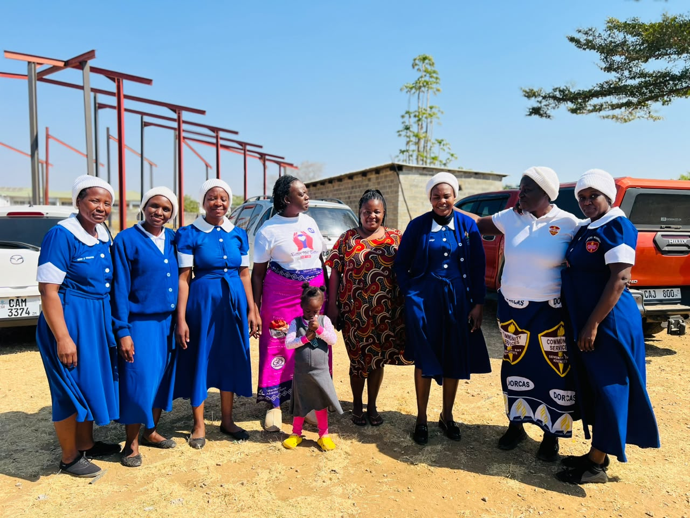

volunteer_activismHero ImageAlways Doing Good
The story of the mothers who carry Dorcas's spirit forward — quietly, faithfully, one act of love at a time.
A Disciple in Joppa
In the seaside town of Joppa lived a woman named Tabitha — known in Greek as Dorcas. Scripture doesn't record a sermon she preached or a title she held. It records something quieter and, in its own way, harder: she was always doing good and helping the poor.
"All the widows stood around him, crying and showing him the robes and other clothing that Dorcas had made while she was still with them."
Acts 9:39
When she died, it wasn't her words the widows brought forward to grieve her — it was her handiwork. Every robe, every garment, was proof of a life spent noticing who was cold and doing something about it. When Peter came and raised her back to life, the whole town knew of it, and many believed. Her name has outlived her by nearly two thousand years — not because she was famous, but because she was faithful.

churchDorcas/dorc4.jpg
content_cutDorcas/dorc5.jpgFrom Eight Women to a Global Family
In 1874, eight women in Battle Creek, Michigan gathered under the leadership of Martha Byington Amadon and began doing exactly what Dorcas had done — mending, sewing, and giving to families who had little. By 1879, the church had a name for what they were doing: the Dorcas Society.
What began in one church basement is now a worldwide movement — Adventist Community Services and ADRA reach more than a hundred countries today. But long after the movement grew a bigger name, local churches everywhere kept calling their own circle of givers by the name that started it all: Dorcas.
That's the ministry we're proud to have at Makeni Central — a direct thread, unbroken for a century and a half, from one faithful woman in Joppa to the mothers who serve among us today.
Presence Before Program
Ask anyone who has been on the receiving end, and they won't first describe a program. They'll describe a knock on the door.

volunteer_activismDorcas/dorc6.jpgFood & Clothing
Mending and gathering clothing for families going without, and quietly making sure no cupboard in our church family stays empty for long.

favoriteDorcas/dorc4.jpgVisiting the Sick & Elderly
Sitting with the widowed, the hospitalized, and the housebound — not for an event, but because someone has to remember them on an ordinary Tuesday.

groupsDorcas/dorc5.jpgComfort in Grief
Standing beside grieving families through funerals and hard seasons — cooking, praying, and simply staying, so no one carries sorrow alone.
"It is not enough to acknowledge that need exists. Love has to arrive at the door."
To Our Dorcas Mothers
You are rarely the ones asking to be seen — which is exactly why we want to say, plainly, that we see you.
For your dedication
For the early mornings spent preparing what you'll carry to someone else's door — dedication that asks for no audience.
For your presence
For simply being there — in hospital rooms, at gravesides, on doorsteps — when presence was the only gift that would do.
For your work
For hands that sew, cook, carry, and clean without complaint — work the church would be poorer without.
For your contribution
For strengthening the whole body of this church — quietly proving, year after year, what love looks like in practice.
Join the Mothers of Dorcas
If your hands are willing — to sew, to cook, to sit with someone, or simply to show up — there is a place for you in this ministry. Speak to the church office to find out how to get involved.
Get Involved